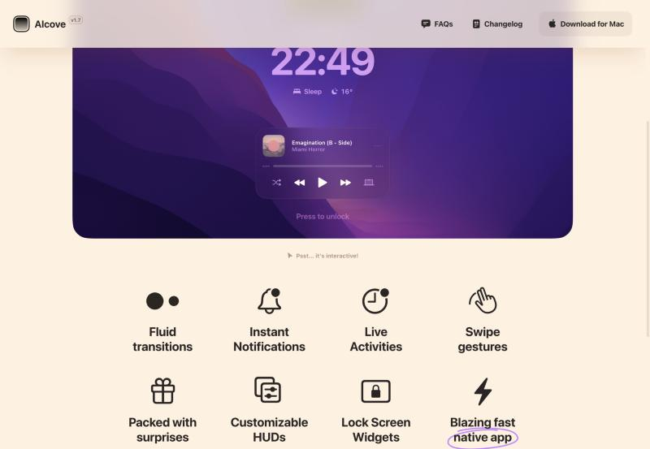
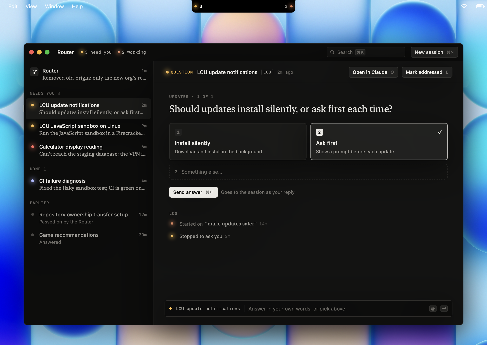

What “polished” could mean for Lookout
Real product images from teams known for craft, with what each one does that we could take. Mark the ones that feel right, then place yourself on the axes at the bottom.
The island

Alcove
The closest to Apple's own island: black glass that grows out of the notch, one thing at a time, and motion that does most of the work.

Notion Calendar, in the menu bar
A tiny surface that answers one question (what's next?) and one action (join). Light type, generous line height, no borders.
Calm, airy windows

Things 3
The benchmark for “appeasing”. Almost no lines; structure comes from whitespace. One accent blue. Rows breathe. Every icon is drawn for the app.

Things 3, Quick Find
A floating panel with soft depth, large comfortable rows, and results grouped by plain words, not caps or tags.

Amie
Playful but disciplined: rounded, soft colour fills, friendly type. Shows how warmth can coexist with polish.
Dense and precise

Conductor
The same job as the Router (many agents, one place), done as a quiet dark workspace: sidebar of agents, a chat, a changes panel.

Linear and Raycast
Already measured in the last round. Their polish is in restraint: 12–13pt type, three greys, one accent, structure “felt not seen”.
Where round 4 stands

Why it still feels like too much
Each idea is fine alone; together they compete. One screen uses eight devices at once:
- glowing lamps
- mono caps labels
- bordered mono tags
- serif and sans and mono
- keycap cards
- key hints on every button
- a log rail
- a bordered command line
Place yourself
The dots are my guess at what you've said so far. Tell me where you'd move them.